Lisboa Day 1 · da Largo do Rato até à beira do mundo
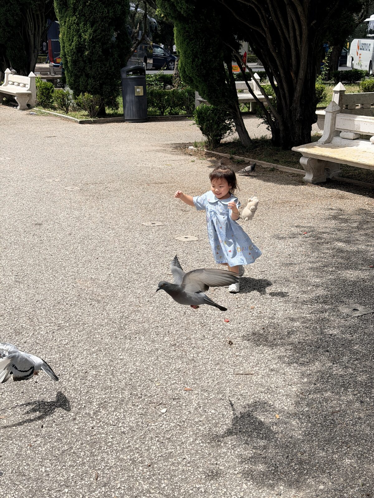
飛機落地不到 18 小時,葡萄牙的第一頓正餐被排在 Largo do Rato 廣場邊一家叫 Albå 的店。Bistro · Specialty Coffee · Matcha Bar 三合一招牌,小小一間,門口貼著 「permitida a entrada com animais」——歡迎帶寵物進來,順便也歡迎帶推車。
店是一間叫 Dança das Borboletas Lda.(「蝴蝶之舞有限公司」)經營的。葡萄牙人連開店都要先把店名寫成一首詩。
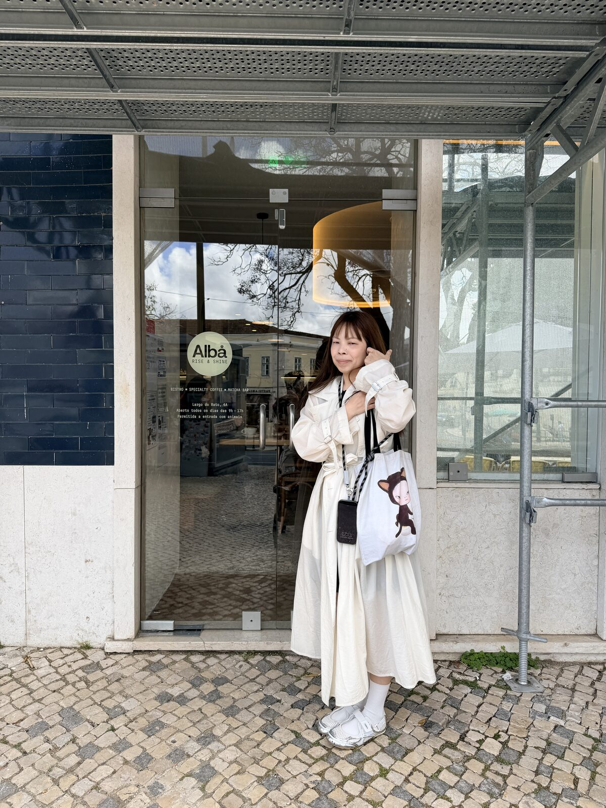
桌上端來的是 Strawberry Matcha Hot 雙層粉綠分層 6,50 €。底層抹茶綠、頂層粉紅奶油山,小米看到第一眼眼睛就亮起來——伸手過去用食指戳了那球粉紅奶油的最頂端。阿米下意識說了句「aii」,然後決定不阻止她。
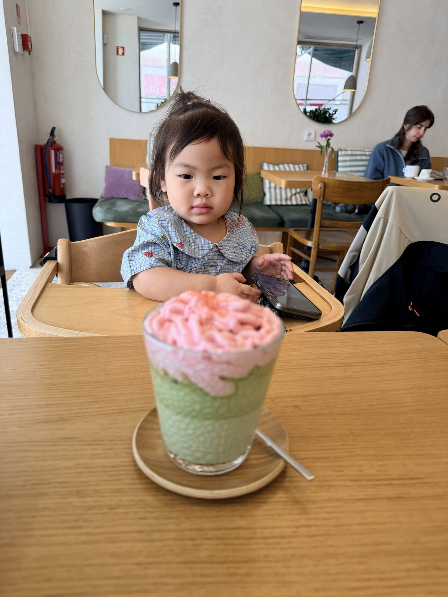
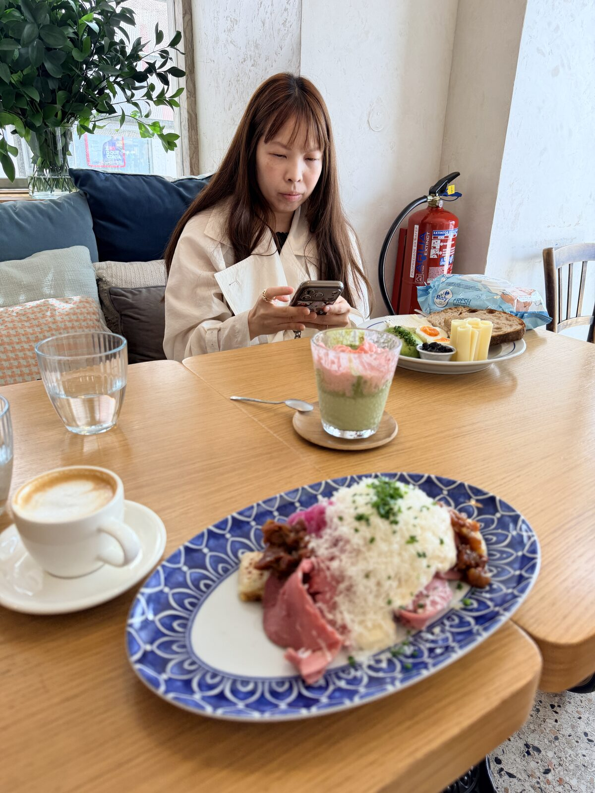
草莓抹茶認真不錯!
主餐兩份:阿米點 Breakfast Plate(全麥麵包、起司、奶油、橄欖、番茄、煎蛋)10 €,我點 Crepe Pastrami 14 €——藍色花紋大橢圓盤上,煙燻牛肉片、白米、起司、醬汁堆成一座小山。麵包旁邊還塞了一包 Carrefour Baby 嬰兒濕紙巾——這是阿米的隨身配件。
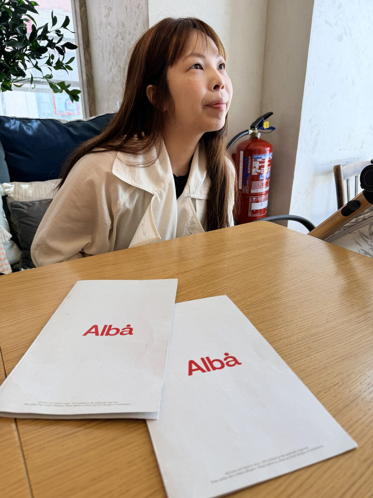
| 品項 | 備註 | € |
|---|---|---|
| Breakfast plate | 麵包+起司+蛋+橄欖+番茄 | 10,00 |
| Crepe pastrami | 煙燻牛肉米飯盤 | 14,00 |
| Strawberry matcha hot | 分層粉綠 hero ⭐ | 6,50 |
| Macchiato | 2,50 | |
| Total | IVA 13% 含 | 33,00 |
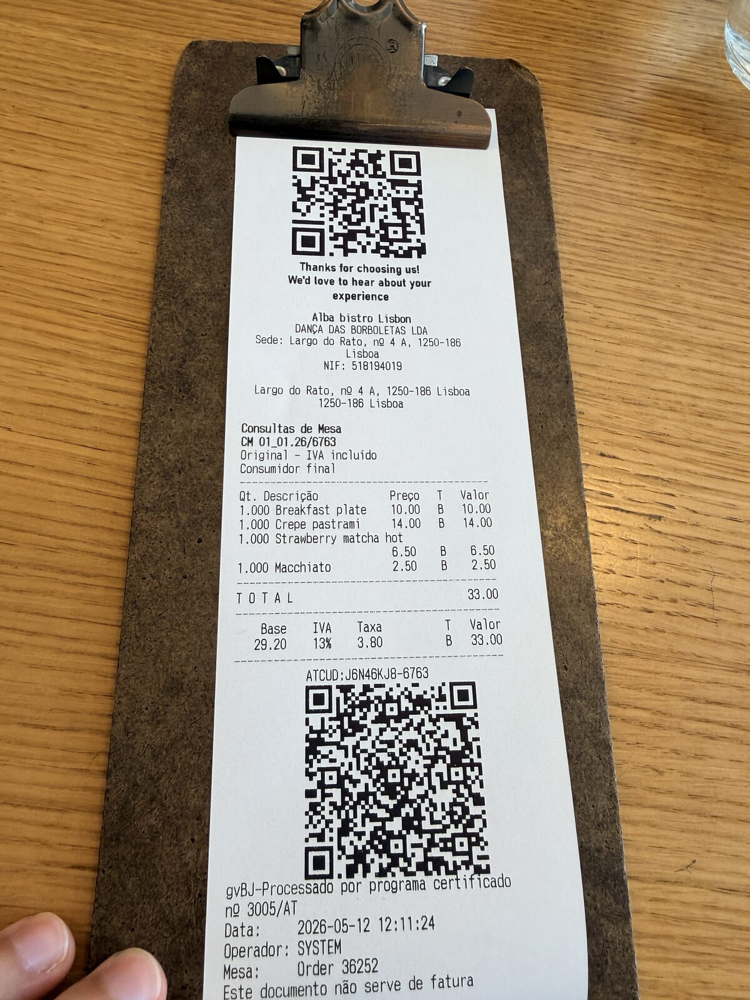
從 Albå 走出來,順著 Rua da Escola Politécnica 往東斜下走,沒走兩步就在路口看到那台黃色的 28 號電車——*carris* 老木箱,前頭一塊小黃牌寫著終點。後面遠遠又一台 28 號跟著來。
里斯本的電車是 1873 年從馬拉車改成蒸氣,1901 年通電的。28 號是現在最有名的觀光路線,從 Martim Moniz 跑到 Campo de Ourique,一路爬七座山——拍它的人比坐它的人多。
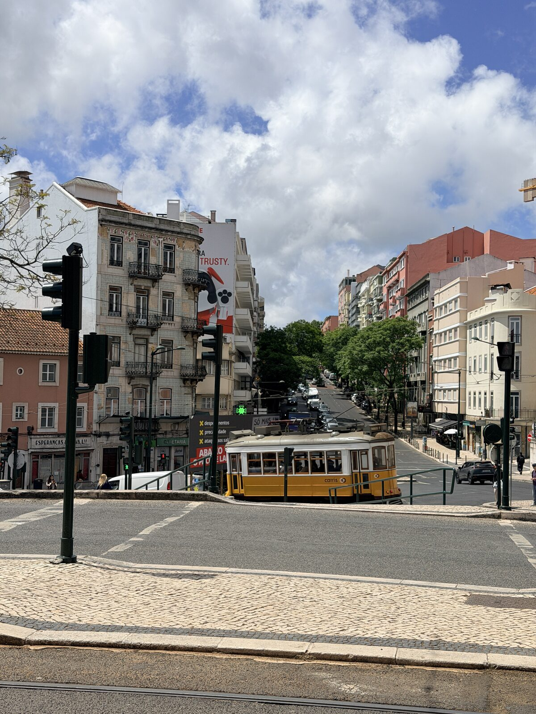
同一個十字路口,抬頭還能看到 Pastelaria 1300 那家老店——黃色立面、咖啡座、綠色洋傘。天空中還有一架小小的 TAP 班機正在飛過。
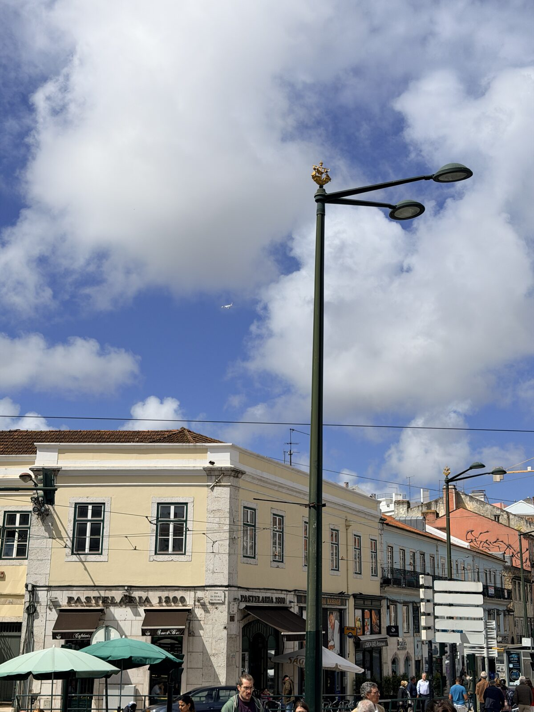
路燈柱頂端是一個小小的金色船與海錨——昨天晚上飯店外面看 Pombal 雕像時也看到過。那是 brasão de Lisboa,里斯本市徽。市徽上一艘船兩隻烏鴉,傳說當年聖文森的遺骸從南方海運上岸時,兩隻烏鴉一路護送。船的部分,合理;烏鴉護送的部分,聽聽就好。
Bolt 在 Rua da Escola Politécnica 往 Belém 的路上,我隔著車窗拍下對面一棟米黃色公寓——綠色法式鐵藝陽台、窗台一盆假向日葵——前景一棵藍花楹剛盛開,紫色花序密密麻麻掛在像書法線條一樣彎曲的枝椏上。
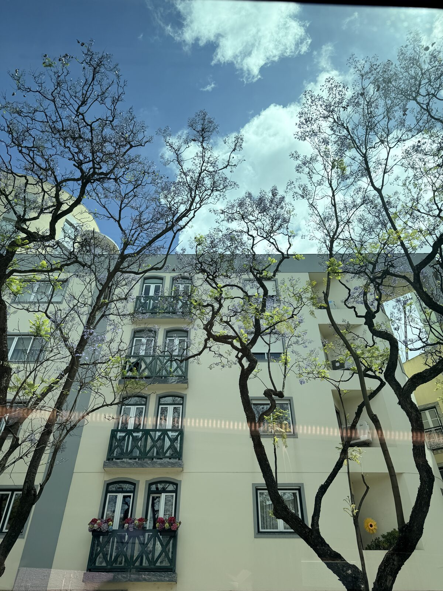
藍花楹是南美洲原生樹種,葡萄牙人 18 世紀從巴西殖民地帶回里斯本種,結果意外地適應大西洋氣候。每年 4 月底到 6 月初整個里斯本會被染成淡紫色——尤其是 Avenida da Liberdade、Marquês de Pombal 廣場那一帶。我們剛好在 5 月中,正中花季。
巴西人說「藍花楹開了,期末考就到了」(quando o jacarandá floresce, vêm as provas finais)。里斯本人沒有這種焦慮,只是會抬頭看一眼,然後繼續走路。
Mosteiro dos Jerónimos 熱羅尼莫斯修道院,1501 年起建。João de Castilho 1516 年雕的南門 Portal Sul,整面牆是密密麻麻的聖徒像、葡萄藤、繩結、海洋符號——Manueline 葡式晚期哥德風格的代表作,1983 年 UNESCO 世界遺產。
我們今天沒進去。要進去得排隊,要排隊就得把推車摺起來,把推車摺起來就得抱小米——抱完小米就抬不動推車。所以我們站在門口仰頭看了五分鐘,小米被王子抱在懷裡睡眼朦朧地看著拱門。
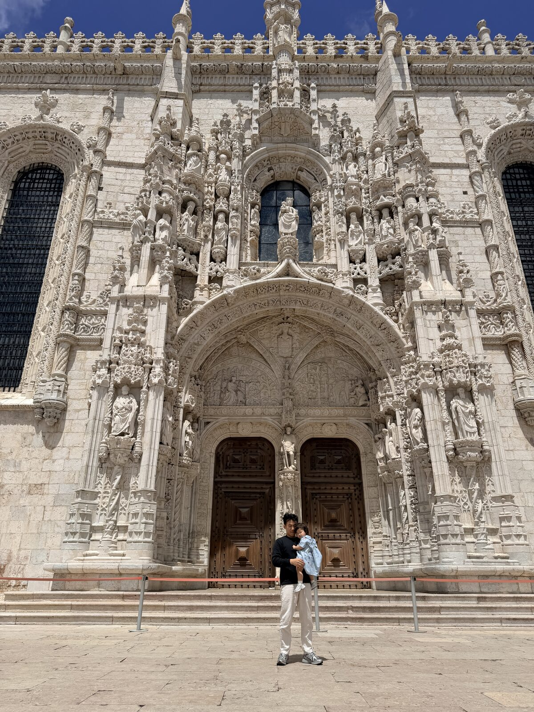
裡面有 Vasco da Gama 的石棺。昨天從飛機上,我們從 11,000 公尺高空看到了用他名字命名的 Vasco da Gama 大橋——今天在 11 公尺外的石頭門框前,沒進去看他的棺木。É o suficiente. 這樣就夠了。
修道院前是觀光巴士集散地——紅色的、藍色的 Tomelloso、白色的 Balerma、葡萄牙國民黃色 carris metropolitana。巴士群中間是一大片碎石廣場,廣場上是整支海鷗+鴿子部隊。
小米剛從推車上被放下來,看到第一群鴿子,愣了 1.5 秒,然後就衝了。
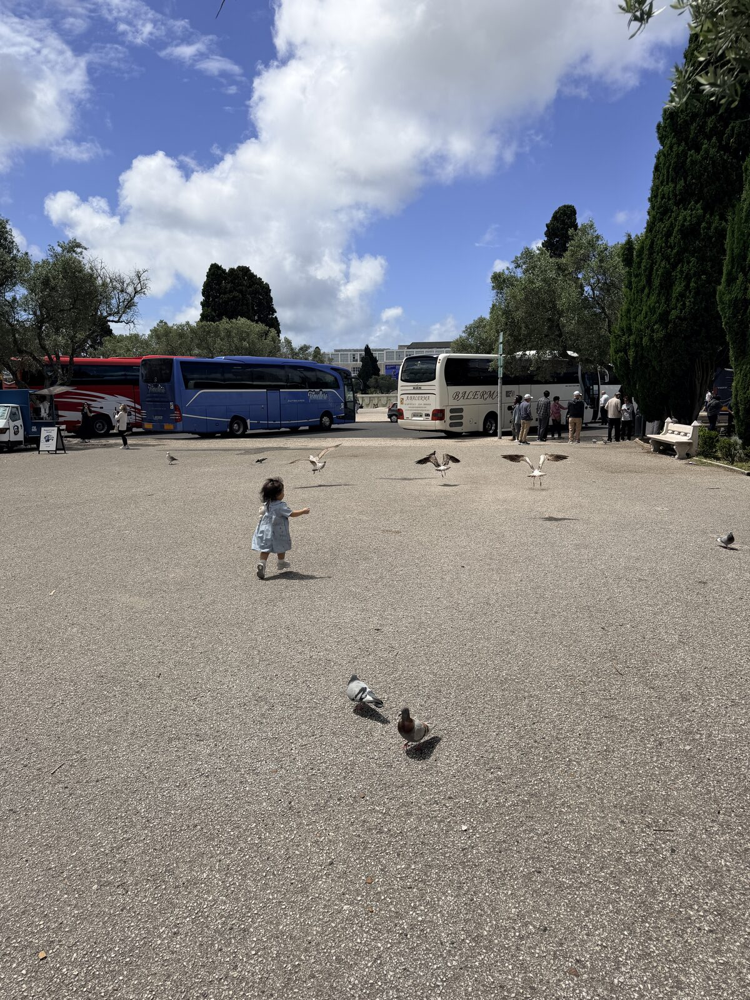
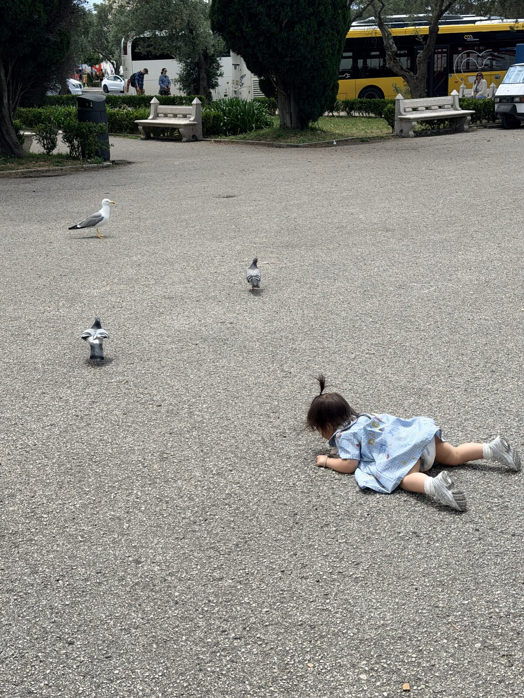
第一張:她遠遠衝向四隻鳥,鳥群正要展翅起飛。
第二張:鴿子撲翅瞬間,小米咧嘴大笑,左手還抱著她那隻迷你小熊。
第三張:結局——小米趴倒在地上,旁邊兩隻鴿子跟一隻海鷗站著用一種「人類幼崽真奇怪」的眼神看著她。
追鴿子的下場。
這是 Day 9 的第一個 hero。也是「歐洲兒童遊戲區巡禮」的第二集——昨天 Day 8 在馬德里 Barajas T2 機場 Zona Infantil 是赤腳玩,今天在 Belém 廣場是穿著小白鞋撲鴿子。O percurso continua.
從修道院往河邊走十分鐘,過了馬路,就是 Padrão dos Descobrimentos 大發現紀念碑。船頭造型,1960 年 Salazar 政權建造,紀念航海王子 Henrique 逝世 500 週年。33 個航海人物雕像,領頭最高那個拿著小帆船——就是 Henrique 本人。後排還能認出 Vasco da Gama、Magellan、Cabral(巴西的發現者)、Camões(《盧濟塔尼亞人之歌》的詩人)......
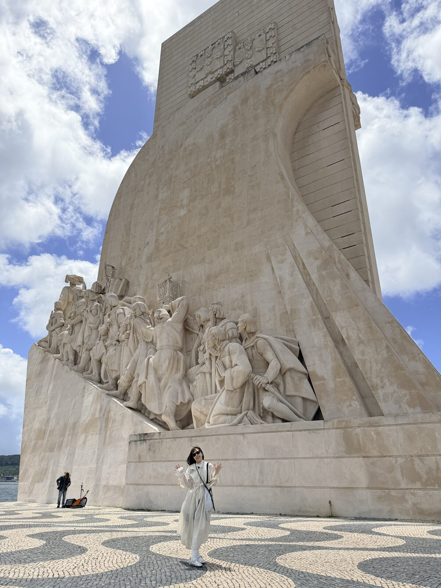
阿米看到第一眼,介紹給我聽的時候,用的就是這個 emoji——「大航海時代紀念碑🪦」。我看著螢幕笑了出來。某種程度上她說得也沒錯——這座碑紀念的是一個時代的結束,不是開始。1960 年蓋的時候,葡萄牙剛失去印度果亞,殖民地還剩非洲和澳門。再過 15 年,殖民帝國徹底瓦解。所以墓碑 emoji 用得有點準。
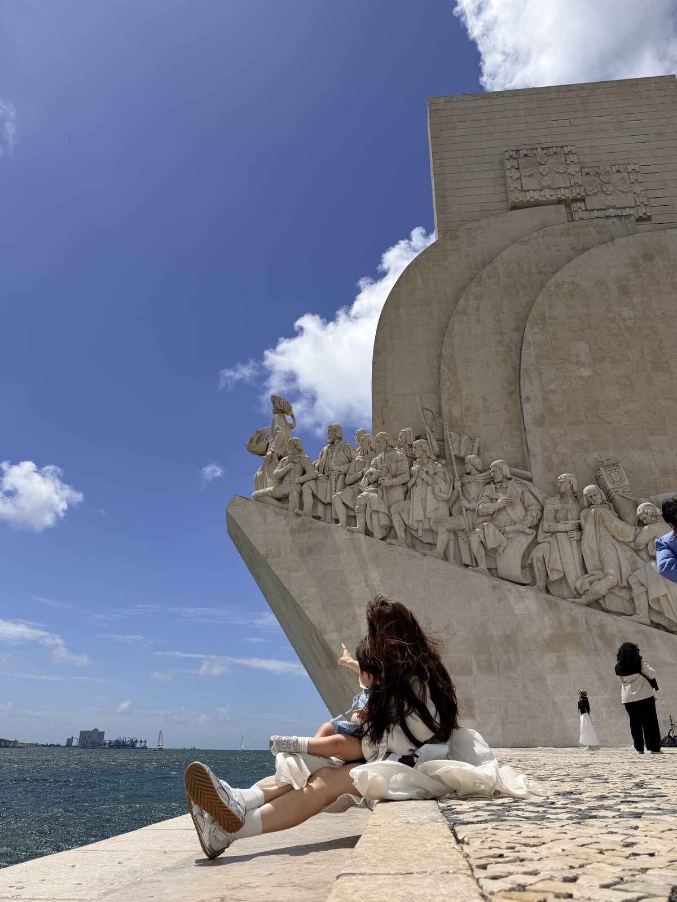
阿米坐在紀念碑底座的石頭邊,風從 Tejo 河面吹上來,頭髮整個被吹散。我從她背後拍了一張——遠方一艘白色帆船,左邊一個小小的城市輪廓。電影感拉滿。
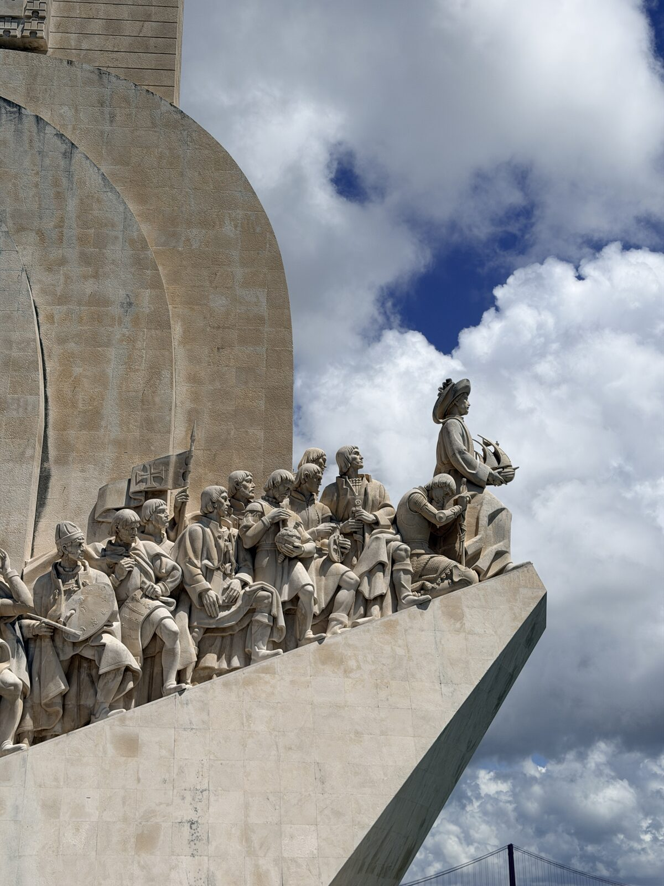
紀念碑前面的廣場,鋪著一塊巨型大理石玫瑰風向羅盤(Rosa-dos-Ventos),直徑 50 公尺。1960 年揭幕時南非送的禮物。中間是世界地圖,標滿葡萄牙人「第一次到」的年代——
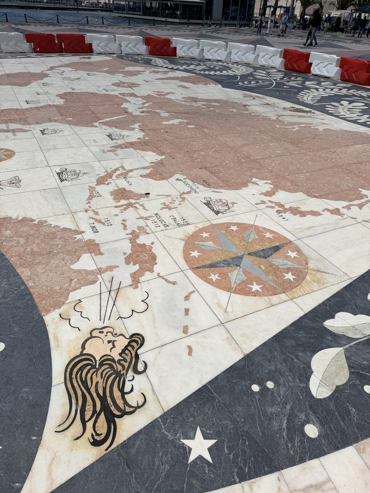
| 地點 | 葡萄牙人第一次抵達 |
|---|---|
| Madeira 馬德拉 | 1419 |
| R. de Cantão 廣州 | 1514 |
| Malaca | 1509 |
| Molucas | 1512 |
| Timor 帝汶 | 1512 |
| 1ª Palau 帕勞 | 1525 |
| Macau 澳門 | 1541 |
站在地圖上 Macau 1541 那一格,腳底踩著 484 年前的事。台灣人看葡萄牙的地圖,跟看一般觀光客的地圖,還是有點不一樣。我們的西邊在這張圖上是被葡萄牙寫下來的——「Ilha Formosa」這個名字本身,就是葡萄牙人 16 世紀路過台灣海峽喊出來的。
地圖上還有一個畫風很可愛的巨型墨魚怪 + 海上噴泉——這是中世紀地圖的傳統梗,叫 hic sunt dracones(「這裡有龍」),意思是「我們不知道這邊有什麼,但反正先畫個怪物在這」。
沿著河邊再走 800 公尺,就是 Torre de Belém 貝倫塔。1519 年完工,16 世紀守衛 Tejo 河口的瞭望塔——也是葡萄牙海權的紀念碑式建築。UNESCO 世界遺產。
塔本身不大,但站在草地上看它,前面河水後面藍天,有一種很模型一樣的精緻感——像被人用樂高拼出來放在草坪上。
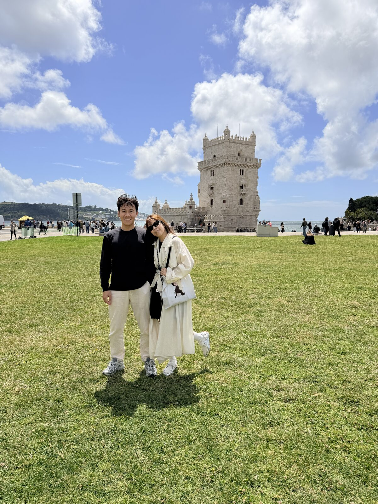
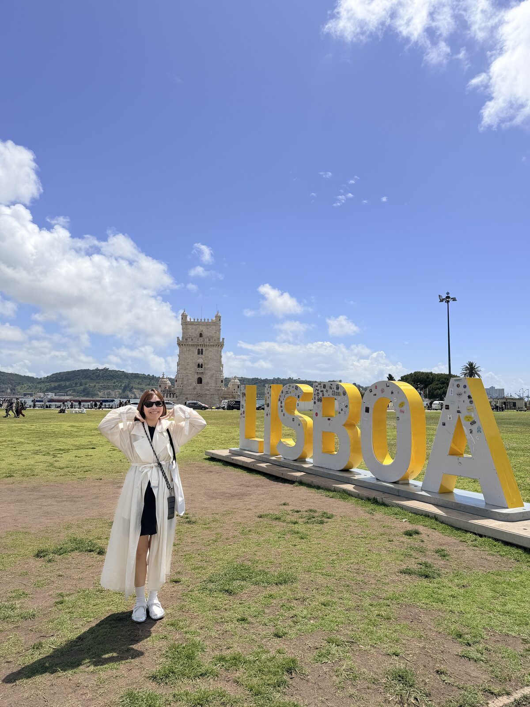
從貝倫塔旁邊有一座小天橋跨過河岸大道。站上去往東看,正前方就是25 de Abril 大橋——一條跟舊金山金門大橋同顏色、同款式的紅色懸索橋。事實上兩座橋是同一家美國公司蓋的(American Bridge Company),1966 年通車。
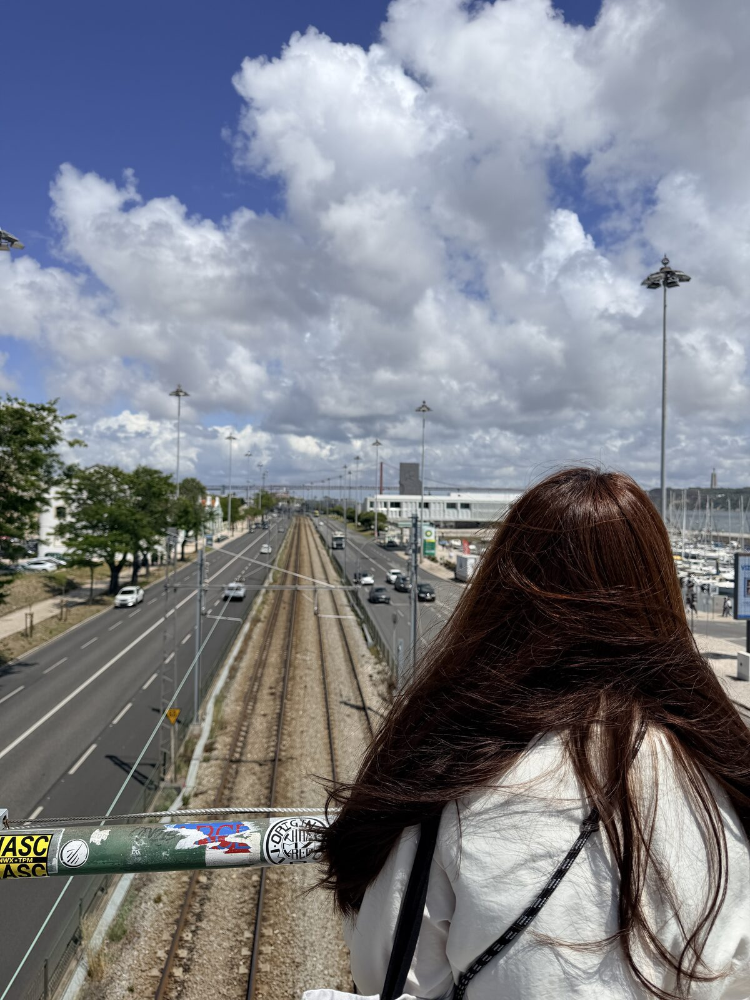
橋原本叫「Salazar 橋」(Ponte Salazar),用的是當時獨裁者的名字。1974 年 4 月 25 日康乃馨革命(Revolução dos Cravos)推翻 Salazar 政權,革命之後橋就改名了——用革命發生的那一天當名字。葡萄牙人很愛把革命寫進地圖。
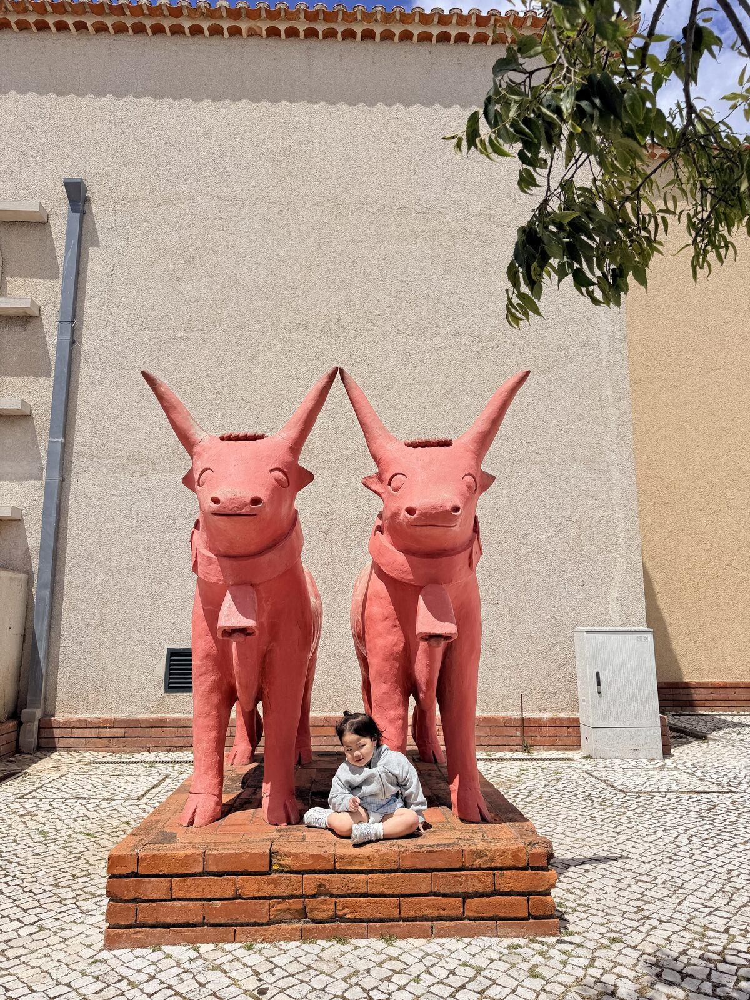
在貝倫塔回來的某條巷子裡,牆角放著兩隻同款紅陶大牛,屁股對屁股、角朝外、耳朵尖尖、眼睛瞇瞇微笑。小米被放下來,自己走過去,在兩隻牛底座中間盤腿一坐——構圖就完成了。
她身上已經換成了灰色 hoodie 連帽套裝——途中在 Bolt 上換的,藍格紋洋裝沾了草地不太能繼續穿。配色:紅、灰、米色,三色平衡。攝影師(我)的快樂時刻。
下午三點半,我們終於走到 Rua de Belém 84-92——Pastéis de Belém, desde 1837。
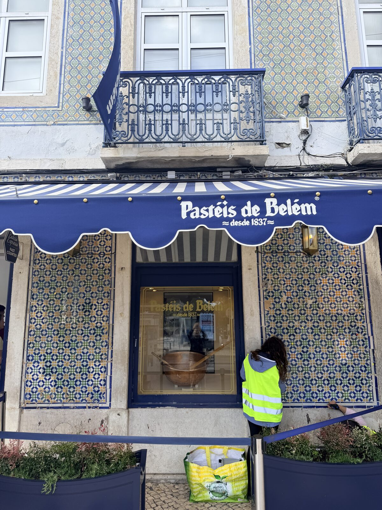
整面店是 azulejo——藍、黃、綠三色幾何拼花磁磚,藍白條紋遮陽棚,中間櫥窗裡擺了那個傳奇的巨型銅鍋(tacho de cobre)——當年修士熬蛋黃漿的傳統工具,現在是品牌象徵物。
故事是這樣的:18 世紀,Jerónimos 修道院的修士用蛋白漿來熨衣服(讓修士袍維持挺直)——每天用掉的蛋白多,剩下的蛋黃就更多。修士們把蛋黃 + 糖 + 麵粉做成各種糕點,蛋塔是其中一種。
1820 年代葡萄牙自由派革命,1834 年所有的修道院被關閉。Jerónimos 的修士為了活下去,把蛋塔的祕方賣給了隔壁的甘蔗精煉廠老闆。老闆 1837 年開了店,就是 Pastéis de Belém。
189 年後的今天,我們上午站在修道院門口(蛋黃的起源),下午站在 1837 店門口(蛋塔的歸宿),中間隔著一條 Rua de Belém 走過去——等於走了 189 年。
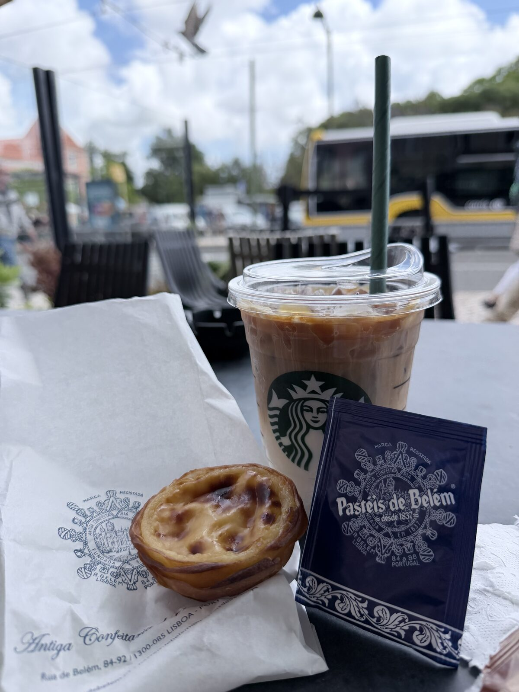
但這個故事的真正 plot twist——是本店隔壁就是星巴克。所以我們的桌上同時擺著:
189 年的歷史和 55 年的全球連鎖咖啡,同一張桌、同一個下午。
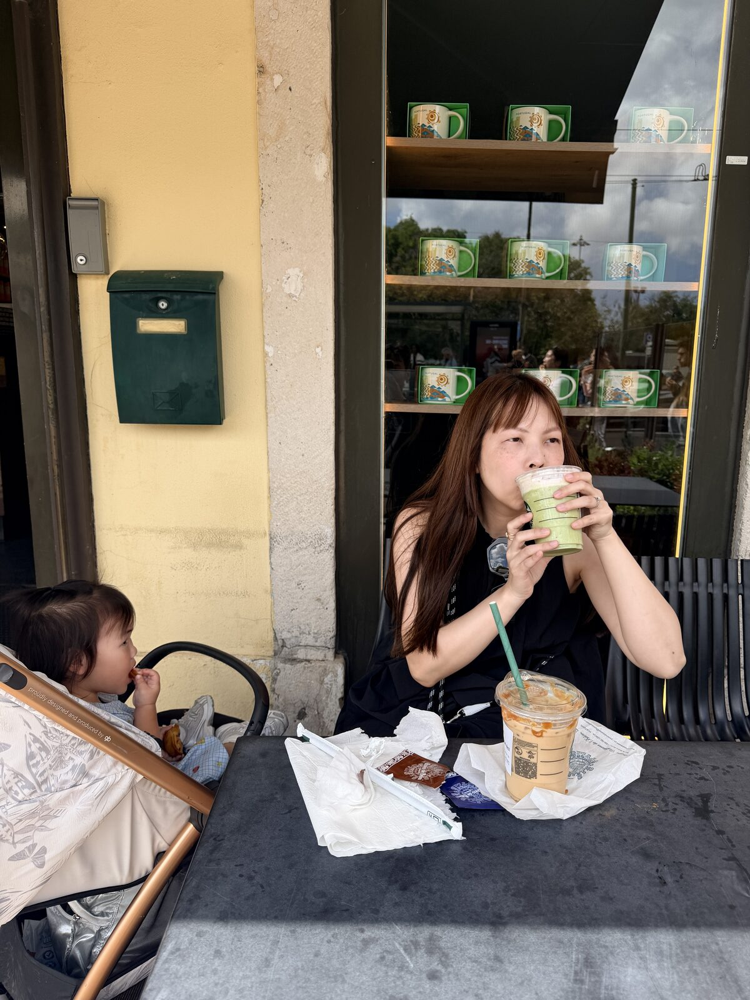
| 對手 | 用戶評語 | 結果 |
|---|---|---|
| Day 8 · Altis Prime 飯店歡迎蛋塔 | 「飯店蛋塔很普,台灣的好吃非常多」 | ⚠️ 輸給台灣 |
| Day 9 · Pastéis de Belém 1837 本店 | 「蛋撻好吃😋,但肉桂粉我沒那麼愛」 | ✅ 扳回 |
1837 終於把面子撈回來。肉桂粉拒收。
葡萄牙人吃蛋塔的標準動作是桌上兩罐:一罐糖粉、一罐肉桂粉,自己加。台灣人不加肉桂、不加糖粉,只吃酥皮加蛋黃焦糖。Não é melhor nem pior. Apenas diferente. 沒有比較好或不好,只是不一樣而已。
蛋塔吃完,需要放電。Belém 公園(Jardim Vasco da Gama 旁邊的兒童區)有一座紅黃配色塑膠滑梯,旁邊還畫著小蝴蝶、小花、小猴子的剪影。
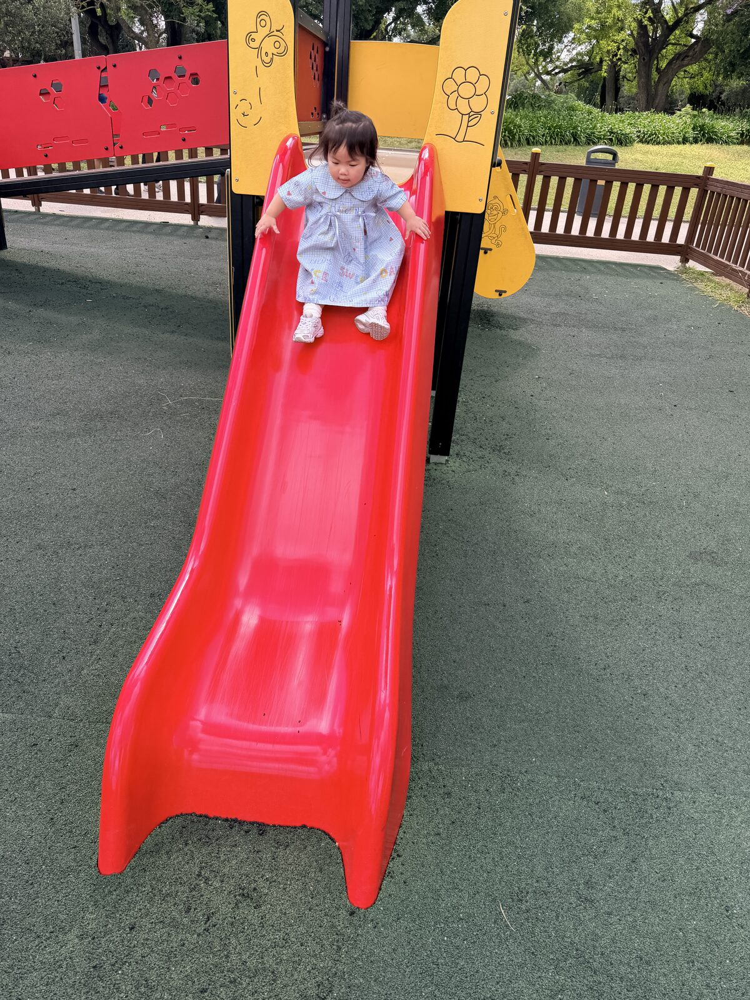
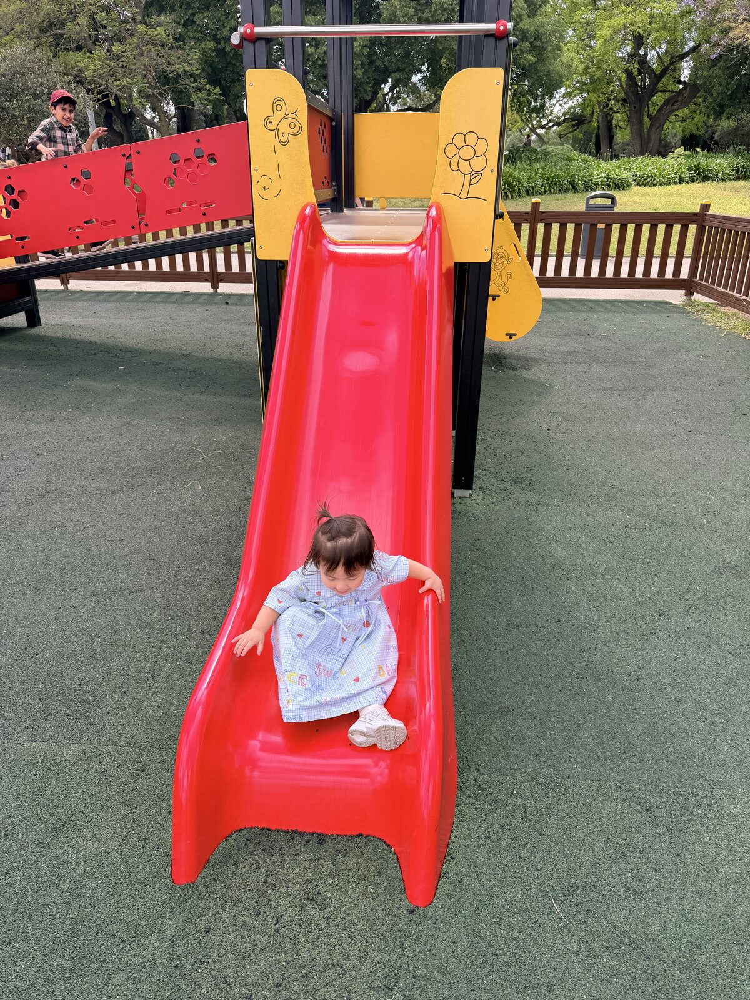
葡萄牙的兒童遊戲區地墊是深綠色軟橡膠——比馬德里機場的灰色地墊高級多了。小米滑到底沒摔倒,還回頭看了我一眼,確認我在看,然後又跑去爬樓梯第二輪。
晚上的餐廳叫 O Frade。O frade 在葡語裡是「修士」——也就是說,我們今天從修士的修道院門口開始(§ Four),走到修士的蛋塔本店(§ Eleven),最後吃了一家叫修士的米其林餐廳。修士主題的三重閉環。
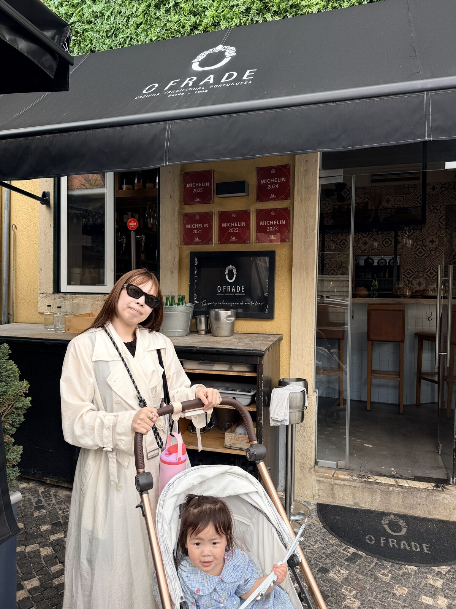
O Frade:Carlos Afonso 與表弟 Sérgio Frade 2019 年創立,2020 拿到米其林必比登(Bib Gourmand),2021/2022/2023/2024/2025 連續五年都在榜上。主廚現在是 Bruno Oliveira。標榜 Alentejo 阿連特茹(葡萄牙南部酒鄉)傳統菜,U 形吧台 + 看主廚現場料理。
標榜「O país inteiro servido ao balcão」——「整個葡萄牙就在這吧台上」。
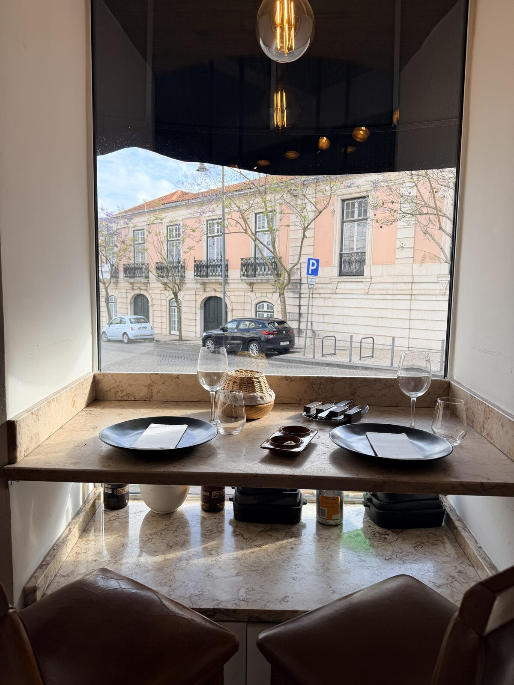
原本想點竹蟶(razor clams)當開胃,但確認過 chef 用了大量奶油大蒜白酒醬汁——對阿米的甲殼類過敏邊緣不安全。最後改點他們的另一道招牌:
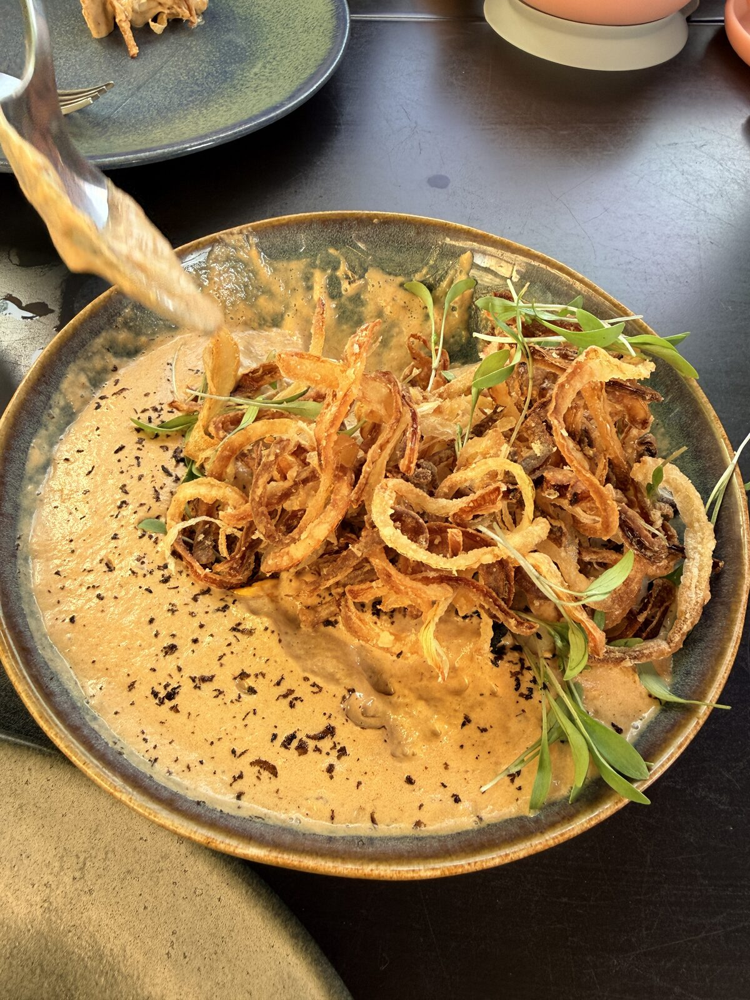
Bacalhau, Alho Francês e Ovos 18 € —— 葡萄牙國民菜 Bacalhau à Brás 的升級版。傳統版用切絲薯條混蛋液,O Frade 把馬鈴薯改成奶香韭蔥醬,頂層撒一大把酥炸洋蔥絲跟紫蘇嫩芽。盤底是琥珀色的奶湯,撒著黑色細顆粒——可能是鹽漬橄欖或炭粉。蕁麻疹週的安全牌——鱈魚絕對安全,意外地點對了。
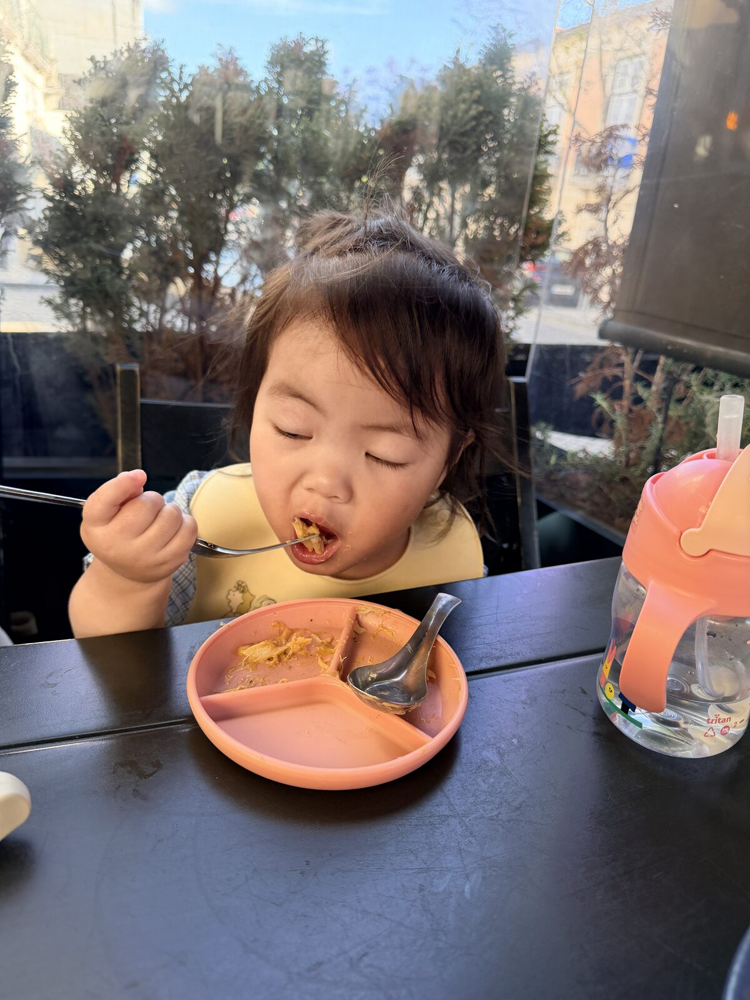
小米也很認真在吃同一道。桃色矽膠分隔盤是我們自備的——隨身帶著走,在哪都拿得出來。米其林餐廳坐下,服務生看到也沒多說什麼,還貼心地把鱈魚切碎了一些分到她盤子裡。
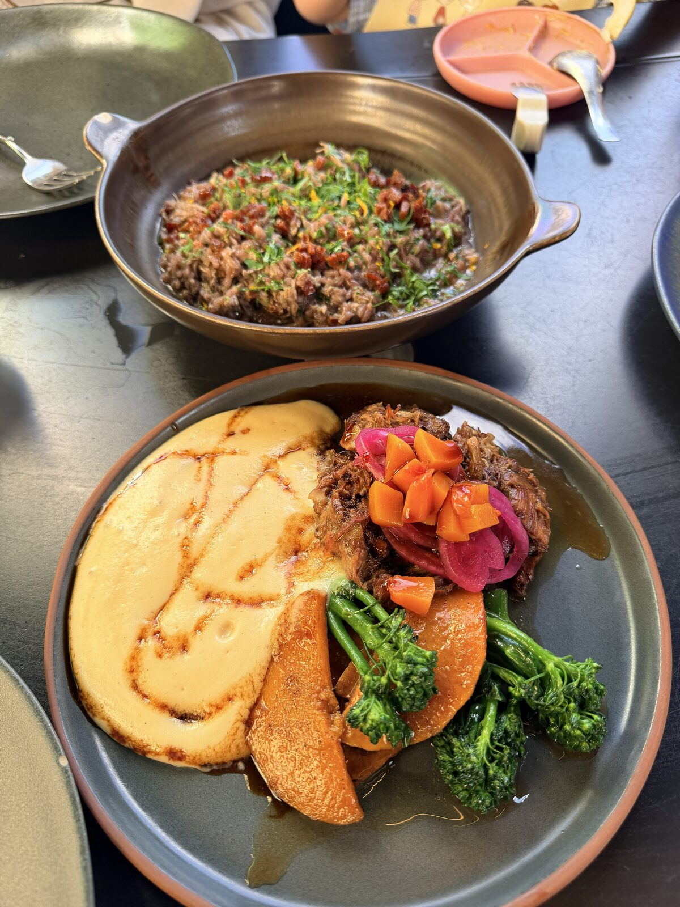
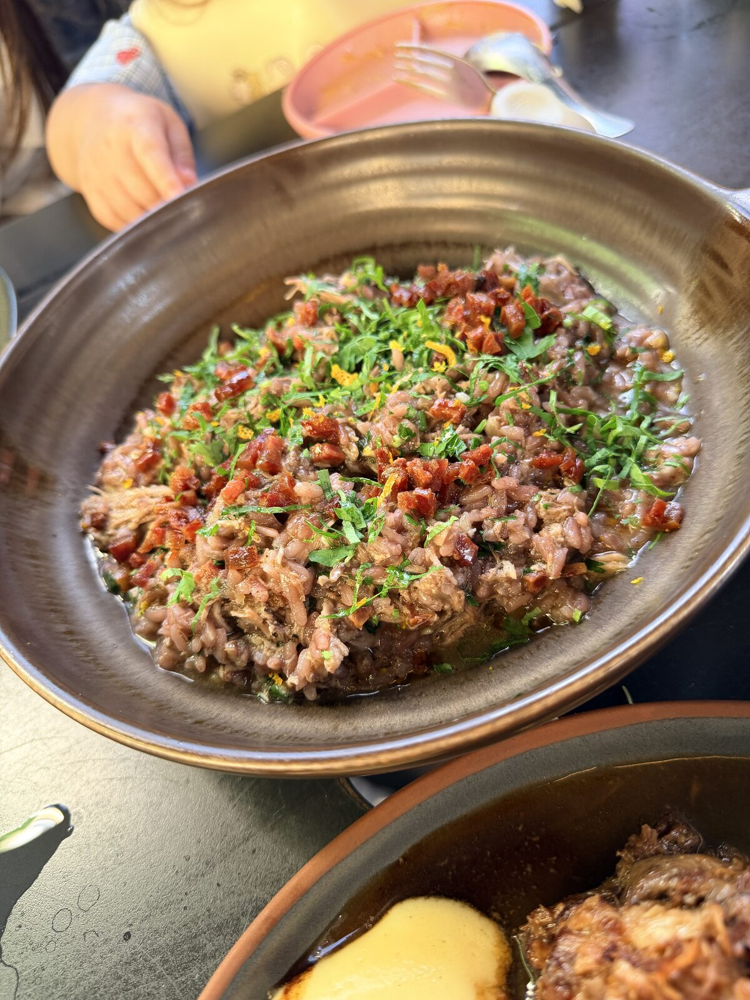
Arroz de Pato à Frade 23 € —— 修士鴨肉飯,O Frade 的店之星。紫米色澤(因為加了 vinho da talha 陶罐紅酒)、滿滿chorizo 紅丁、香芹綠末、橙皮絲三重奏。質地像義式 risotto 卻不糊。米其林評論用詞:「flavour overshadowed by orange zest」(柳橙皮香太搶)——但對我這種台灣口味,柳橙皮意外地適合。chorizo 太多,蕁麻疹角度沒去掉、放手吃,等等再說。
Rabo de Boi Estufado com Legumes 21 € —— 燉牛尾 + 招牌薯泥。盤面構圖:左邊是奶黃色薯泥(畫上焦糖肉汁線條,像書法),右邊是燉牛尾肉絲堆成的小山,頂上覆蓋醃紫洋蔥 + 橘色甜椒丁,配菜是烤南瓜片 + broccolini 西蘭花苗。所有米其林評論一致說:「薯泥才是真正的冠軍」。我吃了一口同意。
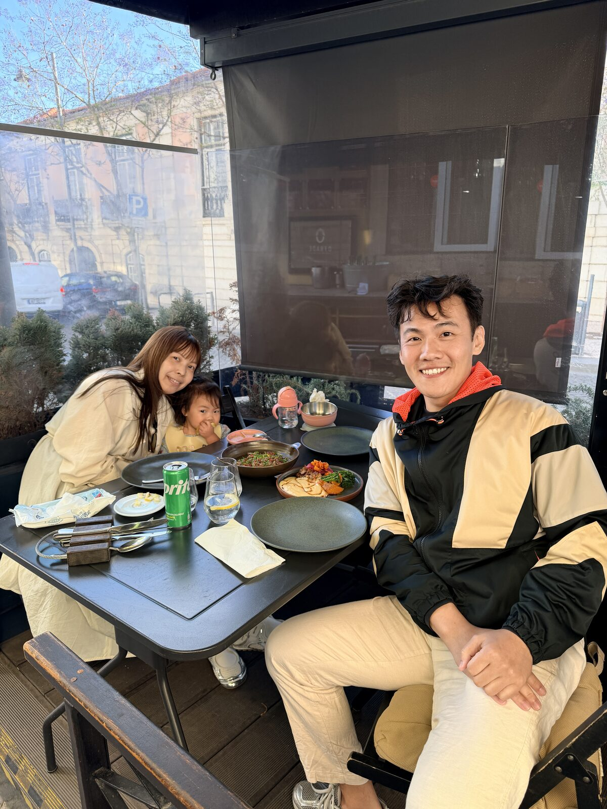
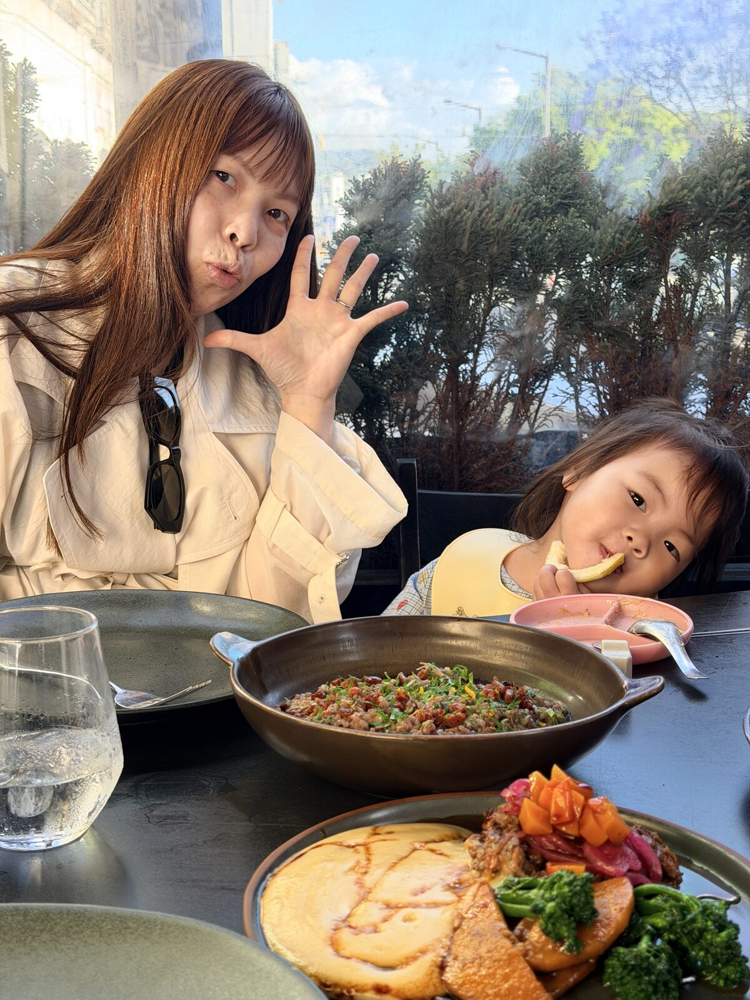
米其林。好吃。
| 品項 | 葡文 | € |
|---|---|---|
| 鱈魚韭蔥蛋 | Bacalhau Alho Francês | 18,00 |
| 修士鴨肉飯 | Arroz Pato Frade | 23,00 |
| 燉牛尾 | Rabo Boi Estufado | 21,00 |
| 靜水 | Água sem gás | 2,00 |
| Sprite | 3,00 | |
| 小計 | 67,00 | |
| 建議小費 10% | 6,70 | |
| Total | 每人 22,33 € | 73,70 |
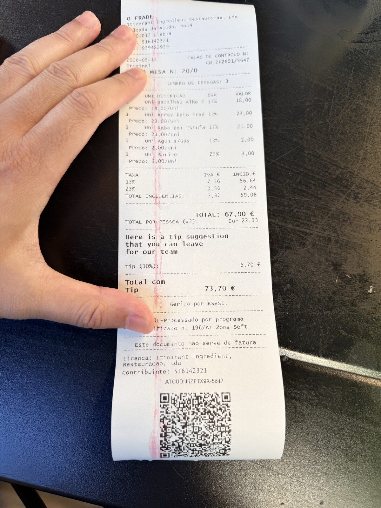
| 餐 | 地點 | € |
|---|---|---|
| 早午餐 11:29 | Albå Rise & Shine · Largo do Rato | 33,00 |
| 下午茶 | Pastéis de Belém 1837 + Starbucks | ~12 |
| 晚餐 | O Frade · 米其林五連霸 | 73,70 |
| Total | 三人 · 0% 酒精 | ~119 |
A 藍花楹日 · Bolt 車窗 → 紀念碑路上 → O Frade 窗外。五月里斯本限定淡紫色背景。
B 修士的 189 年 · Jerónimos 修道院 → Pastéis de Belém 1837 → O Frade(店名=修士)。三重修士主題完整閉環。
C 雙橋對稱 · Day 8 Vasco da Gama(東/1998/紀念發現印度航線 500 年)→ Day 9 25 de Abril(西/1966/紀念康乃馨革命)。
D 蛋塔對決 · Day 8 飯店蛋塔(輸給台灣)→ Day 9 1837 本店(扳回,但肉桂粉拒收)。
明天就是 5/13。
Feliz Aniversário, 阿米.
蕁麻疹週撐到第 9 天。明天解禁。
Vinho Verde、Ginjinha、Presunto · 全部在 Day 10 等。